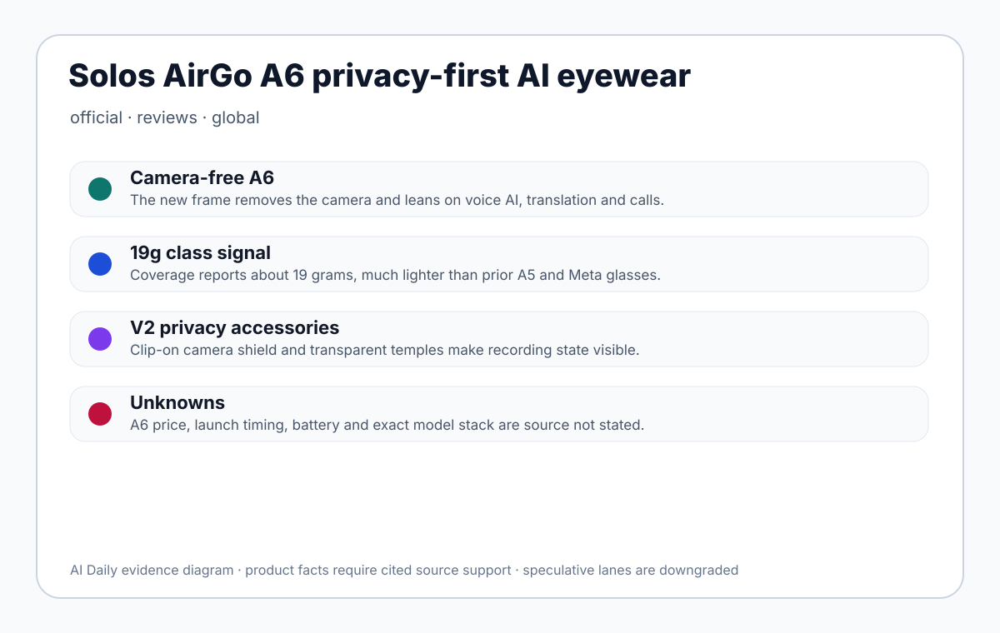
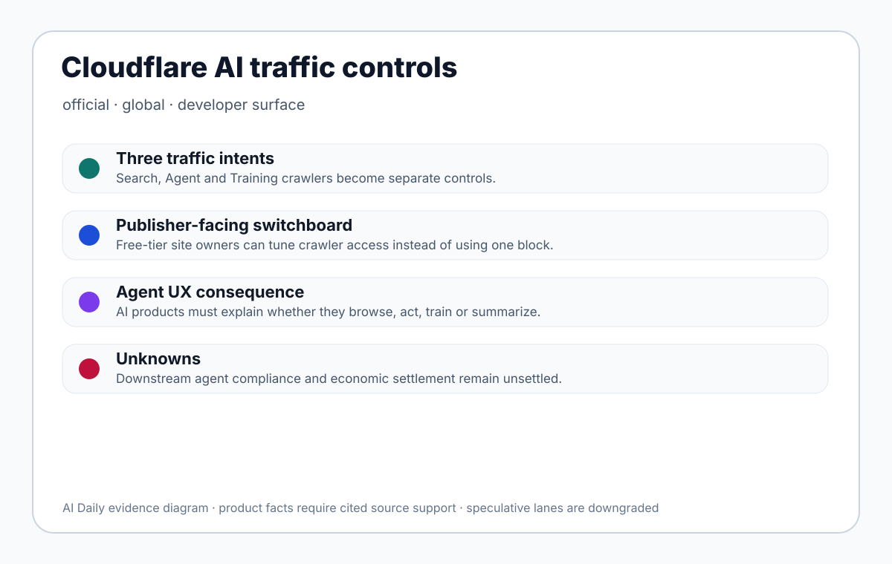
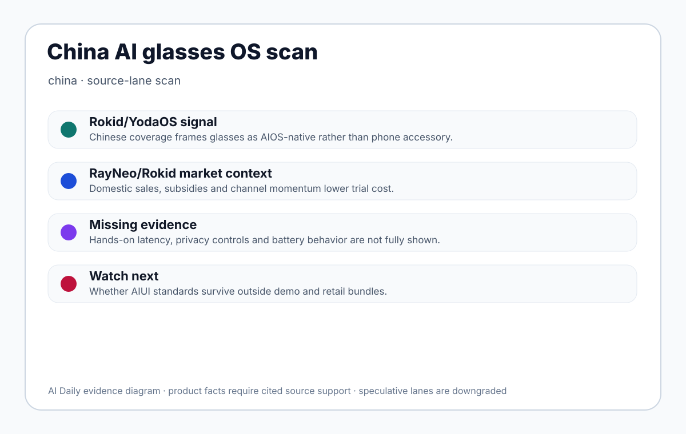
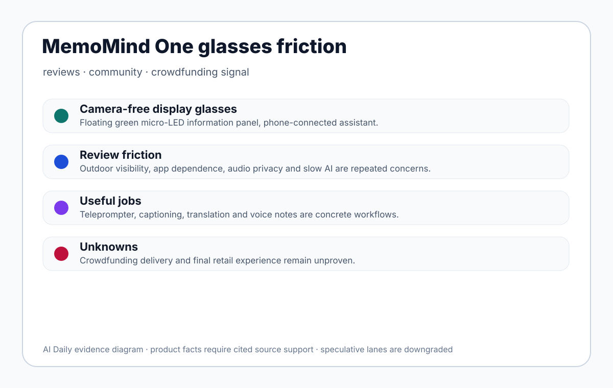
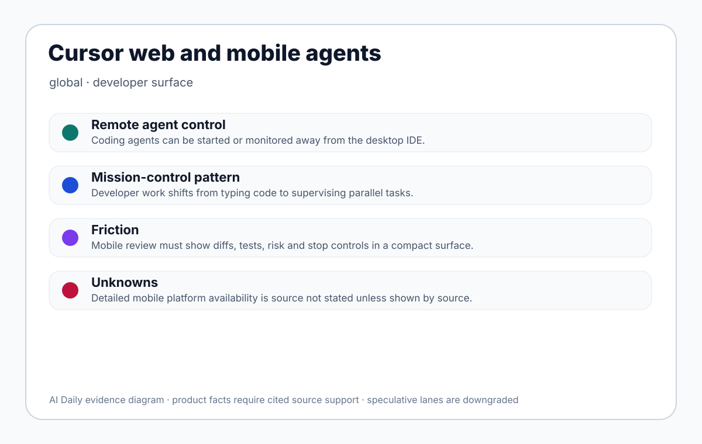
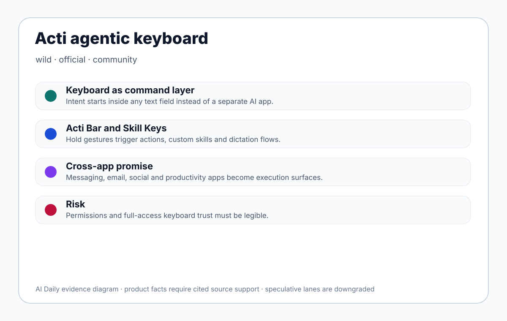
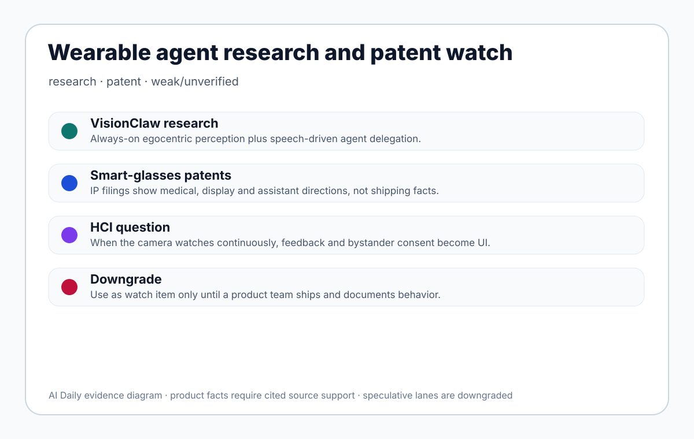
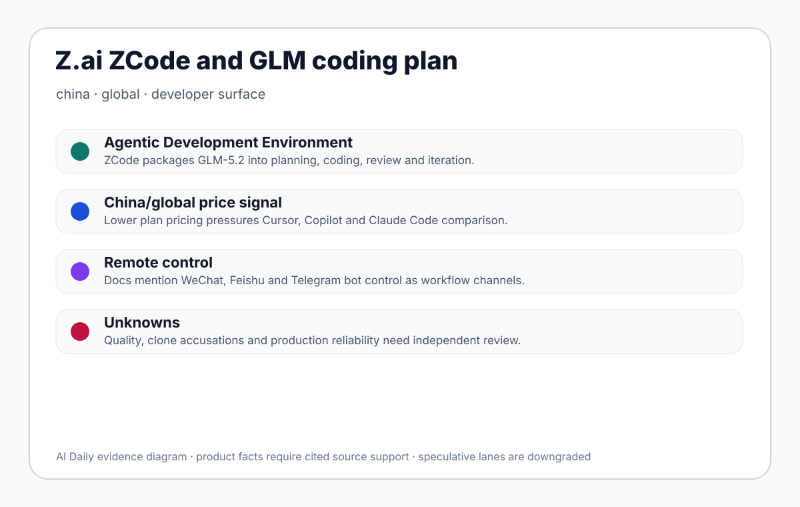
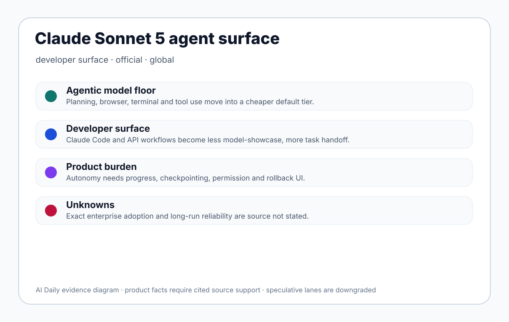

Solos AirGo A6 is a new AI smart-glasses product that leans toward ordinary eyewear rather than camera glasses. Today's coverage says the A6 removes the camera and focuses on voice AI, real-time translation, calendar reminders, hands-free calling, and music playback. The Verge reports a weight of about 19 grams, materially lighter than the previous A5 range of 36 to 40 grams and the latest Meta glasses at 54 to 60 grams. It supports full prescription-lens compatibility and multiple styles, including transparent frames that expose the internal electronics. Solos' own site positions SolosChat, OpenAI-powered smart glasses, translation, and communication as core experiences.
01
2026-07-07 · America/Toronto
AI Daily
AI Daily 2026-07-07: AI Glasses Privacy Moves Into Product Form
Today's cover is Solos AirGo A6: a camera-free frame plus V2 privacy accessories turn AI-eyewear trust into product form.
The 19g-class signal, prescription compatibility, voice AI, and translation show that eyewear agents first have to work as everyday glasses.
Cloudflare, Acti, MemoMind, ZCode, and China AIOS scans complete the map of agent entry points moving from web, keyboard, IDE, and phone into eyewear.
AI hardwareagent UXsmart glassesAI keyboarddeveloper surfacecrawler policyChina scanpatent watch
Sources: Cover source

02
Issue map
Structure before evidence
Read today through eight lanes: official products, reviews, community friction, wild products, research, patents, China, and global signals.
03
Official
Official
Official Desk
confirmed product · confirmed product · review/media signal · privacy accessory
Solos AirGo A6 turns AI-eyewear privacy into visible product form
developer surface · developer surface · confirmed control surface
Cloudflare splits AI crawlers into Search, Agent, and Training controls
weak/unverified · weak/unverified · source-lane scan
China AI glasses scan: the narrative is moving from phone accessory to AIOS-native eyewear
04
Official Desk
Official
confirmed product · confirmed product · review/media signal · privacy accessory
2026-07-07 launch coverage
Solos AirGo A6 turns AI-eyewear privacy into visible product form
Product: Solos AirGo A6. Solos AirGo A6: Solos AirGo A6 is a new AI smart-glasses product that leans toward ordinary eyewear rather than camera glasses. Today's coverage says the A6 removes the camera and focuses on voice AI, real-time translation, calendar reminders, hands-free calling, and music playback. The Verge reports a weight of about 19 grams, materially lighter than the previous A5 range of 36 to 40 grams and the latest Meta glasses at 54 to 60 grams. It supports full prescription-lens compatibility and multiple styles, including transparent frames that expose the internal electronics. Solos' own site positions SolosChat, OpenAI-powered smart glasses, translation, and communication as core experiences.. This item is handled as confirmed product; specs, price, regions and dates use cited source claims only, and missing details remain source not stated.
The user wears A6 like ordinary glasses and triggers assistant features through voice: asking questions, translating, hearing reminders, taking calls, or playing music. Because the A6 frame has no camera, it does not support first-person photo or video capture and does not create the same immediate bystander question of whether recording is happening. For users of AirGo V2, Solos is also introducing privacy accessories: colorful transparent temples, a clip-on privacy shield, and a bundle option with clip-on sunglasses. The physical shield can sit in front of the camera, making the recording state legible to nearby people rather than relying only on software indicators.
The cited sources support the approximately 19-gram weight, camera-free A6 design, voice AI, real-time translation, calendar reminders, hands-free calls and music, full prescription compatibility, multiple frame styles, transparent-frame option, and accessory pricing for AirGo V2: $39 colorful transparent temples, a $49 clip-on privacy shield, and a $79 privacy bundle. Solos' official site supports SolosChat and OpenAI-powered positioning. A6 final price, launch date, battery life, chipset, microphone count, speaker details, Bluetooth version, model routing, app permissions, regional availability, and water resistance are source not stated.
The concrete jobs are travel translation, commute reminders, pre-meeting calendar prompts, taking calls while walking or running, lightweight voice Q&A, conversation assistance, and daily wear for users who need prescription lenses. A6 shows a different bet in smart eyewear: make the glasses light, prescription-compatible, and socially acceptable first, then place AI inside voice and audio flows. The V2 privacy shield serves users who still want camera functions but need a visible way to show that the camera is blocked.
A6 addresses social trust and wearability cost. The camera on smart glasses creates a technical capability and a social problem: bystanders may not know whether they are being recorded. Weight and appearance also determine whether a user will wear the device all day. The camera-free route sacrifices visual understanding but lowers social friction and brings the frame closer to ordinary glasses. The physical privacy shield turns camera state from a software icon into a visible hardware condition, which is a more direct HCI pattern than asking users to trust an LED or app label.
The available evidence today is launch coverage and product-page material, not long-term user review data. The Verge and Android Central confirm the product and accessory form factors. There is not yet enough evidence on ordinary-user comfort, translation accuracy, call quality, app stability, whether bystanders understand the privacy shield, or whether users keep wearing the glasses after novelty fades; source not stated.
The product signal is privacy as hardware UX, not a new model benchmark. A6 uses a camera-free frame to set the first trust boundary for AI eyewear. The AirGo V2 physical shield expresses camera unavailability through mechanical occlusion. That is easier for wearers and bystanders to understand than a purely software-controlled privacy promise. It gives future agent eyewear a useful pattern: sensor state needs to be readable in the environment, not buried in settings.
Solos' official site and AirGo V collection are accessible. The Verge reports that A6 pricing and availability have not been announced. AirGo V2 privacy accessory prices are reported. A6 purchase regions, shipping timing, prescription ordering flow, warranty, and software subscription terms require further official updates; source not stated.
The limitation is also the product choice: without a camera, A6 cannot support first-person visual Q&A, photo capture, video, object recognition, or a VisionClaw-style environmental agent. If voice and audio quality are mediocre, it risks becoming a lighter Bluetooth eyewear product rather than a useful AI interface. Unknowns include battery, microphone noise handling, model latency, supported translation languages, privacy policy, data flow, exact OpenAI integration, and prescription-lens regional support.
A6 is the cover story because it answers the most practical question in AI eyewear through product form: how do the wearer and nearby people know what the glasses are doing? The product lesson is direct. AI wearables do not only need intelligence; they need sensor boundaries, recording state, weight, and prescription fit to be understandable without explanation. A6's commercial success is unproven, but it moves privacy from compliance text into visible hardware.
05
Official Desk
Official
developer surface · developer surface · confirmed control surface
2026-07-01 official release
Cloudflare splits AI crawlers into Search, Agent, and Training controls
Product: Cloudflare AI traffic controls. Cloudflare AI traffic controls: A publisher and developer control surface for AI bot traffic, not a consumer chatbot. Cloudflare separates AI traffic into Search, Agent, and Training use cases so a site owner can allow, restrict, or block different crawler intents instead of relying on a single blunt switch. Pay Per Crawl adds a compensation path for authorized access. For product teams, the important shift is infrastructural: when an AI system visits a page on behalf of a person, the site can ask whether that visit is search indexing, user-directed task execution, or model training.. This item is handled as developer surface; specs, price, regions and dates use cited source claims only, and missing details remain source not stated.

A publisher and developer control surface for AI bot traffic, not a consumer chatbot. Cloudflare separates AI traffic into Search, Agent, and Training use cases so a site owner can allow, restrict, or block different crawler intents instead of relying on a single blunt switch. Pay Per Crawl adds a compensation path for authorized access. For product teams, the important shift is infrastructural: when an AI system visits a page on behalf of a person, the site can ask whether that visit is search indexing, user-directed task execution, or model training.
A site administrator uses Cloudflare's dashboard to choose AI bot traffic settings and tune policies for Search, Agent, and Training crawlers. On the AI product side, the user asks an agent to read, compare, buy, summarize, or research. The agent requests the target page; Cloudflare evaluates the declared crawler category, the publisher rule, and any paid authorization path, then allows, blocks, or routes the request into a compensation model. The end user may never see Cloudflare directly, but will feel the result as successful access, login friction, a blocked task, or a need for a clearer explanation.
The cited official material supports the three intent categories, broader availability including Free-tier customers, the Pay Per Crawl direction, and policy enforcement through Cloudflare's edge and bot-management stack. Exact revenue shares, settlement details, how every AI company must register crawlers, how consumer agents should display a blocked reason, and country-by-country defaults are source not stated. This is not a standalone SDK; it is a control plane that combines CDN, WAF, bot classification, content authorization, and emerging economic rules for agent access.
The immediate use cases are media sites, forums, ecommerce catalogs, documentation sites, and independent publishers deciding which AI uses are allowed. A publisher can keep traditional search visibility, separately evaluate agents acting for users, and refuse or monetize training crawls. For AI browsers, research assistants, shopping agents, and enterprise knowledge tools, the control changes task success rates and error recovery. For publishers, it separates 'a user asked an agent to access my page' from 'a model vendor harvested my content for training,' which used to be collapsed into one operational problem.
The product solves permission ambiguity, not model intelligence. Before this kind of control, site owners had difficulty distinguishing search indexing, user-delegated access, AI answer generation, and training collection, so the practical choices were often broad blocking or broad acceptance. By making crawler intent visible, Cloudflare gives publishers a more explainable interface and pressures AI products to expose access failure, authorization gaps, paywall status, and training restrictions as user-facing states instead of reducing everything to a generic network error.
Media and community discussion centers on whether publishers will receive meaningful compensation, whether AI companies will honestly identify crawlers, and whether user-delegated agents will break when access rules tighten. The official sources do not provide direct end-user quotes for this control surface; source not stated.
The new technology is not a new model but a protocol-like product distinction: crawler purpose becomes a first-class interface variable. Search, Agent, and Training are treated as different product intents. That distinction will matter for agent browsers, AI search, content APIs, crawler identity, payment authorization, and future UX copy explaining why a task can or cannot proceed.
Cloudflare says the new options are available to all customers, including the Free tier. The full Pay Per Crawl market, geographic terms, settlement mechanics, AI-company participation, and default enforcement timing must be checked against current Cloudflare updates; source not stated where the cited sources do not specify.
The open questions are operational: whether AI companies consistently declare crawler type, how mixed-use crawlers are classified, how malicious bots are handled, how logs separate user delegation from training, whether publishers can use strong controls without harming legitimate users, and whether agent products translate HTTP or policy failures into useful next actions.
This is the strongest product-infrastructure signal of the day because it changes the handshake between agents and the open web. If it works, users get clearer reasons, permissions, and paths to access. If it fails, agentic browsing becomes a landscape of unexplained blocks. Product teams building agents should treat crawler identity, access purpose, failure recovery, and content authorization as core UX, not back-office compliance.
06
Official Desk
Official
weak/unverified · weak/unverified · source-lane scan
2026-06 to 2026-07 source-lane scan
China AI glasses scan: the narrative is moving from phone accessory to AIOS-native eyewear
Product: China AI glasses OS lane scan. China AI glasses OS lane scan: A source-lane scan rather than a single confirmed product dossier. The strongest China-interface signal today is the shift in narrative from smart glasses as phone accessories or camera glasses toward AIOS-native eyewear. QbitAI coverage frames Rokid/YodaOS around active intent management and AIUI standards beyond traditional GUI logic. 36Kr and QbitAI provide market, subsidy, and RayNeo/Rokid momentum context. WIPO's Rokid material adds an international IP, shipment, and deployment signal.. This item is handled as weak/unverified; specs, price, regions and dates use cited source claims only, and missing details remain source not stated.

A source-lane scan rather than a single confirmed product dossier. The strongest China-interface signal today is the shift in narrative from smart glasses as phone accessories or camera glasses toward AIOS-native eyewear. QbitAI coverage frames Rokid/YodaOS around active intent management and AIUI standards beyond traditional GUI logic. 36Kr and QbitAI provide market, subsidy, and RayNeo/Rokid momentum context. WIPO's Rokid material adds an international IP, shipment, and deployment signal.
The claimed interaction flow is that users do not treat glasses merely as Bluetooth audio, a camera, or a notification mirror. They speak intent directly into the glasses and receive display, translation, navigation, meeting, guide, or service feedback. The system layer is supposed to manage intent, decide when to prompt, when to display, and when to call a phone or cloud service. Because much of the material is industry reporting or company-context coverage, hands-on evidence for failure states, permissions, battery life, latency, and everyday recovery is still limited.
The cited sources support a warming Chinese AI/AR glasses market, consumer subsidies that may lower trial cost, vendor language around AIOS, AIUI, and YodaOS, RayNeo sales and certification reporting, and WIPO's statements about Rokid's weight, IP portfolio, shipments, and deployments. Chipsets, sensors, OS APIs, models, prices, launch regions, battery, weight, display specs, and privacy mechanisms must be checked product by product through official sources. This scan does not merge those claims into one inferred product.
The visible jobs include translation subtitles, meeting capture, museum or industrial guidance, walking or cycling navigation, camera sharing, notifications, and voice assistance. The China-specific product opportunity is service closure: local life, payments, maps, workplace messaging, ecommerce, and office tools can potentially be connected faster inside domestic ecosystems. If glasses call those services directly, users may take out phones less often. The available evidence does not yet prove stable retail-user closure.
The narrative addresses phone dependence. If glasses still require phone confirmation, phone authorization, phone typing, and phone correction, they are expensive notification screens. AIOS language tries to move intent recognition, task management, and service invocation into the eyewear layer. But without mature permission design, display hierarchy, and recovery states, AIOS will simply move phone complexity into a smaller visual field.
The scanned public material is mostly media narrative, vendor performance reporting, and IP context. It does not provide enough long-term ordinary-user feedback. Queues, sales momentum, and subsidies do not equal satisfaction; source not stated for durable user sentiment.
The signal is that AIOS and AIUI are becoming interface language vendors want to own. Whoever defines intent, state, notification density, translation placement, camera and microphone permissions, and cross-service calls on glasses gets closer to owning a lightweight AI terminal.
Availability varies by brand and model. Rokid, RayNeo, and other vendors have product and market materials, but YodaOS/AIOS versions, API openness, upgrade paths, regions, and support terms must be checked against official pages. This scan does not treat an industry trend as a directly purchasable product fact.
Missing evidence includes independent brightness, battery, latency, noisy-environment recognition, privacy indicators, long-wear comfort, prescription support, app crash rate, service failure rate, and after-sales data. The China smart-glasses lane is hot, but heat is not product completion.
The China lane is directionally important but must be downgraded. If AIOS-native glasses become real, eyewear moves from accessory to task entry point. Until there is stronger hands-on and official API evidence, it remains a watch signal. The next checks are Rokid/YodaOS, RayNeo, Quark/Tongyi, and whether any of them show stable, reproducible, purchasable user flows.
07
Reviews
Reviews
Review Desk
review/community friction · review/community friction · crowdfunding signal
MemoMind One shows a place for camera-free glasses and the friction of daily AI eyewear
08
Review Desk
Reviews
review/community friction · review/community friction · crowdfunding signal
2026-07-01 to 2026-07-02 hands-on/review scan
MemoMind One shows a place for camera-free glasses and the friction of daily AI eyewear
Product: XGIMI MemoMind One. XGIMI MemoMind One: A camera-free AI/XR smart-glasses product positioned around privacy-friendly information display and lightweight assistance rather than capture. The official site describes phone-connected reminders, daily tasks, notifications, AI assistant answers, and more. Hands-on coverage describes a green micro-LED or near-eye display, configurable information modules, voice recording with transcription, teleprompter use, captioning, and translation. Pricing and delivery details vary across Kickstarter-oriented coverage, so numbers not consistently supported by the cited sources are treated as source not stated.. This item is handled as review/community friction; specs, price, regions and dates use cited source claims only, and missing details remain source not stated.

A camera-free AI/XR smart-glasses product positioned around privacy-friendly information display and lightweight assistance rather than capture. The official site describes phone-connected reminders, daily tasks, notifications, AI assistant answers, and more. Hands-on coverage describes a green micro-LED or near-eye display, configurable information modules, voice recording with transcription, teleprompter use, captioning, and translation. Pricing and delivery details vary across Kickstarter-oriented coverage, so numbers not consistently supported by the cited sources are treated as source not stated.
The wearer connects the glasses to a phone, configures visible modules through an app, and starts workflows such as translation, navigation, teleprompter, or notification display. The everyday interaction is not raising a camera to capture the world; it is glancing at small pieces of information near the field of view. A user can check calendar context, listen to audio, record a meeting, read captions, or use a script while presenting. Reviews report that some actions still need to be initiated from the phone app and that full message reading, replies, navigation, and translation are not completely independent. In practice, the product reads more like a companion display than a standalone AI operating system.
The sources support a camera-free design, phone connection, AI assistant positioning, reminders, tasks, notifications, teleprompter, captioning, translation, recording/transcription, a green display experience, Kickstarter or preorder context, and review friction around outdoor visibility, audio, and app dependence. Chipset, sensor package, detailed optical specs, exact brightness, weight, battery, certification, final shipping timing, final app reliability, and the complete model-backend stack are incomplete or inconsistent in the available sources; source not stated where not directly supported.
The strongest use cases are workday and mobility tasks: presenter notes during a talk, meeting capture and transcription, multilingual captions during conversation, quick reminders while walking, and glanceable weather or calendar information without taking out a phone. The absence of a camera also makes the product easier to explain in privacy-sensitive spaces such as offices, classrooms, trade shows, and meeting rooms. The wearer can credibly say the glasses are not filming bystanders, which is a real social-design advantage.
MemoMind One addresses two pain points: social acceptance of smart glasses and the small but constant cost of checking a phone. Camera-equipped eyewear often creates bystander discomfort. By removing the camera, MemoMind narrows the product to display, reminders, translation, and note capture. That can reduce phone checks and make meeting or presentation workflows smoother. The tradeoff is capability: camera-free glasses cannot do spontaneous capture, visual Q&A, object recognition, or context-aware scene interpretation in the same way camera-based glasses can.
The review friction is consistent across The Verge and TechRadar: outdoor legibility, audio privacy or quality, slow AI behavior, app dependence, and the missing-camera boundary. Reddit discussion shows early tester and Kickstarter interest, but that is community and crowdfunding signal, not broad-market validation. Return rates, long-term comfort, delivery satisfaction, and everyday retention are not yet available from the cited sources.
The new product pattern is the combination of low-intrusion display, voice memory, translation, captions, and phone notifications in a camera-free eyewear workflow. It moves AI glasses away from 'record the world' and toward 'place a small amount of timely information in front of the wearer.' That is an HCI challenge because the display surface is tiny. Information hierarchy, initiation path, and recovery from error have to be restrained and obvious.
The official and media sources point to a Kickstarter or preorder-stage product. Exact pledge prices, final retail price, prescription-lens pricing, country shipping, warranty, and delivery dates should be verified from the live Kickstarter or official updates. This issue does not treat inconsistent third-party pricing claims as final product facts.
The limits are substantial. No camera means no first-person visual understanding. Phone dependence weakens independence. The display may be hard to read outdoors. Open audio can reduce privacy. A buggy app can undermine the entire entry point. Unknowns include production quality, optical consistency, prescription fit, long-wear comfort, recording disclosure, final software stability, and crowdfunding delivery risk.
MemoMind One belongs in today's issue because it answers a design question from the opposite direction: do AI glasses have to include cameras? Not always. But if the camera-free path is chosen, display legibility, phone dependence, and a few concrete workflows must be excellent. The current review signal is cautious: the concept is valuable, the everyday product still appears unfinished.
09
Community
Community
Community Friction
review/community friction · community friction · developer surface
Cursor web and mobile make coding agents something developers supervise remotely
10
Community Friction
Community
review/community friction · community friction · developer surface
2026-06-29 to 2026-07-07 scan
Cursor web and mobile make coding agents something developers supervise remotely
Product: Cursor web and mobile agents. Cursor web and mobile agents: A developer-facing control surface for coding agents. Cursor's official site emphasizes coding agents and a Mission Control Interface, while its blog describes agents on web and mobile that can write code, answer complex questions, and scaffold work. TechCrunch reports a Cursor Mobile app for prompting coding agents from a phone or interacting with agents started on the desktop. The product is not simply a mobile IDE; it turns agents into remote work objects that can be started, supervised, redirected, or stopped.. This item is handled as review/community friction; specs, price, regions and dates use cited source claims only, and missing details remain source not stated.

A developer-facing control surface for coding agents. Cursor's official site emphasizes coding agents and a Mission Control Interface, while its blog describes agents on web and mobile that can write code, answer complex questions, and scaffold work. TechCrunch reports a Cursor Mobile app for prompting coding agents from a phone or interacting with agents started on the desktop. The product is not simply a mobile IDE; it turns agents into remote work objects that can be started, supervised, redirected, or stopped.
A developer starts a coding agent in desktop Cursor or submits a task from web or mobile. The agent works in a remote or local project context, generates code, edits files, answers questions, or scaffolds a feature. After leaving the computer, the developer checks status from a phone, adds constraints, reviews the result, inspects diffs and tests, and decides whether the agent should continue. The ideal mobile experience is a task-control surface, not a cramped coding environment: the phone is for decisions, approvals, stop commands, requests for more tests, and handoff back to desktop.
The sources support Cursor web and mobile agents, the coding-agent positioning, Mission Control language, agentic development, TechCrunch's mobile-app coverage, and community/forum references to iOS beta and remote desktop-session control. Formal mobile platform availability, Android plans, remote execution architecture, enterprise permissions, repository integration depth, offline behavior, notification granularity, pricing, and security-audit scope are source not stated in the cited material.
The concrete jobs are starting a small fix while commuting, checking whether a background agent finished, adding a constraint between meetings, reviewing generated diffs from a phone, asking the agent to repair failing tests, and supervising a desktop-launched task without staying at the desk. For an independent developer or engineering manager, it turns the waiting time of code generation into a background task that can be monitored in parallel with other work.
The product addresses the time-and-place mismatch of coding agents. AI coding tasks can take minutes or longer. Users do not want to sit in front of an IDE waiting, but they also cannot responsibly let an agent modify a codebase without oversight. A mobile control surface preserves human supervision while reducing desk lock-in. The UX problem is compression: changed files, test status, risk, branch context, and merge readiness must be made legible on a small screen.
Cursor forum posts and media coverage show developer interest in mobile control, remote sessions, and agentic workflows, but that remains community and launch signal. The cited sources do not provide broad satisfaction data, false-merge rates, mobile-review failure cases, or enterprise security feedback; source not stated.
The new pattern is mission-control development. The primary interface shifts from editor-only to agent orchestration: task queues, status, diffs, tests, logs, approvals, and takeover become first-class. The phone does not replace the desktop; it separates supervisory actions from code-writing actions.
Cursor's official web/mobile agent page is available, TechCrunch reports the mobile app, and forum discussion references iOS beta behavior. Public download status, regions, platforms, enterprise switches, and account permissions should be verified through current Cursor channels.
The limit is mobile review quality. Large diffs, complex tests, dependency changes, security-sensitive files, and product-behavior changes are hard to judge from a phone. If the interface provides only 'done' and 'continue' without risk summaries, test evidence, and a clear stop command, users will be nudged into careless approval. Remote agents also need transparent handling of secrets, permissions, branches, and rollback.
Cursor web and mobile matter because they define the developer as an agent supervisor. The product should be judged by whether it turns engineering risk into actionable mobile decisions: stop now, add tests, open the desktop, request explanation, or approve. That pattern will influence every serious coding-agent product.
11
Wild
Wild
Wild Desk
startup signal · startup signal · app-store surface · community claim
Acti puts agents inside the smartphone keyboard instead of another AI app
12
Wild Desk
Wild
startup signal · startup signal · app-store surface · community claim
2026-06-30 launch coverage
Acti puts agents inside the smartphone keyboard instead of another AI app
Product: Acti Agentic Keyboard. Acti Agentic Keyboard: An agentic keyboard for iOS and Android. Instead of treating the keyboard as a typing and rewriting utility, Acti positions it as a command layer. The user stays in any text field and triggers actions through the Acti Bar, Skill Keys, AI Dictation, and natural-language skills. The official site describes a unified command layer for apps and APIs, while the App Store listing emphasizes a rebuilt keyboard-native AI action layer, 'press to type,' 'hold to act,' custom Skills, AI dictation, and a redesigned keyboard experience.. This item is handled as startup signal; specs, price, regions and dates use cited source claims only, and missing details remain source not stated.

An agentic keyboard for iOS and Android. Instead of treating the keyboard as a typing and rewriting utility, Acti positions it as a command layer. The user stays in any text field and triggers actions through the Acti Bar, Skill Keys, AI Dictation, and natural-language skills. The official site describes a unified command layer for apps and APIs, while the App Store listing emphasizes a rebuilt keyboard-native AI action layer, 'press to type,' 'hold to act,' custom Skills, AI dictation, and a redesigned keyboard experience.
The intended flow begins inside the current app, not inside a separate assistant. A user is in a messaging thread, email composer, social app, note, or work tool. They type an intent, hold the Acti Bar or a Skill Key, and the keyboard interprets the instruction in the current writing context. It can generate a reply, insert location or live information, create a meeting, fetch content from a connected tool such as Notion, or run a custom skill. The result is returned to the text field or prepared as sendable text. The creator's Reddit description summarizes the flow as typing what you want, long-pressing the spacebar, and letting the keyboard act.
The cited sources support the iOS App Store surface, an iOS and Android direction, Acti Bar, Skill Keys, AI Dictation, custom skills, natural-language skill creation, operation across text fields, and the idea that apps and APIs can be commanded. The model providers, complete Android distribution, API connector catalog, keyboard permission screens, on-device versus cloud boundary, data retention, pricing, enterprise administration, and country availability are source not stated in the sources used here.
The concrete jobs are mobile-first: inserting location or live information in a chat, drafting or rewriting email, turning rough intent into a social post, creating a meeting from a message, fetching data from a workspace tool, and turning repeated mobile actions into reusable Skill Keys. The product is not merely a better autocomplete layer. Its claim is that 'I want to do this now' can be expressed where the user is already typing, then executed without copying context into a separate AI app.
Acti attacks the switching cost of mobile AI. Many mobile assistants still require selecting text, copying it, opening a chatbot, explaining context, waiting for output, copying the answer, and returning to the original app. The keyboard sits beneath nearly every mobile writing workflow, so it is a natural but sensitive place to put an agent. The UX benefit is fewer app switches and less context reconstruction. The cost is trust: users need a clear understanding of what the keyboard can read, transmit, store, and execute.
The Reddit creator post frames the pain as being tired of constantly switching between apps and contrasts Acti with AI keyboards that only rewrite text. That is useful community and founder signal, not an independent quality review. Ordinary-user retention, error rates, privacy complaints, keyboard latency, and App Store review patterns still need to be watched.
The new product idea is a keyboard-native agent layer. Long-press gestures, keys, text context, and natural-language skills become a lightweight automation surface. That is different from a chatbot and different from OS-level shortcuts because it appears at the exact moment of expression. In HCI terms, the keyboard becomes a programmable command layer rather than a passive input device.
The App Store page is live, and TechCrunch reports an iOS and Android launch direction. The exact Android store path, country restrictions, paid tiers, enterprise controls, background permissions, and API partner list are source not stated where the current sources do not specify them.
The main limit is trust. Third-party keyboards often need broad access, and users may worry about sensitive messages, passwords, verification codes, workplace content, or private drafts. The second limit is recovery. If a skill calls the wrong API, fails inside the current app, inserts the wrong text, or is triggered accidentally, the interface needs confirmation, undo, permission explanation, and a short path back to the user's original draft. The current sources do not yet provide enough independent hands-on evidence.
Acti is a strong wild signal because it chooses one of the most durable mobile entry points: the keyboard. The product will be judged on whether cross-app execution is reliable and whether permission explanations are short, credible, and reversible. If both hold, agentic mobile workflows do not have to wait for a full OS assistant redesign; they can start at the input layer users already touch hundreds of times per day.
13
Research
Research
Research Watch
research signal · research signal · patent signal downgraded
VisionClaw and smart-glasses patents: continuous-perception agents remain research and patent signals
14
Research Watch
Research
research signal · research signal · patent signal downgraded
2026 research/patent watch
VisionClaw and smart-glasses patents: continuous-perception agents remain research and patent signals
Product: Wearable agent research and patent watch. Wearable agent research and patent watch: A research and patent watch item, not a confirmed shipping product. The VisionClaw paper describes an always-on wearable AI agent that combines egocentric perception from Meta Ray-Ban smart glasses with Gemini Live and OpenClaw AI agents for speech-driven in-situ action delegation. Related research on conversational breakdowns in smart glasses and patent documents for AI-supported or designed smart glasses provide directional signals. This item is explicitly downgraded: papers and patents are not product facts.. This item is handled as research signal; specs, price, regions and dates use cited source claims only, and missing details remain source not stated.

A research and patent watch item, not a confirmed shipping product. The VisionClaw paper describes an always-on wearable AI agent that combines egocentric perception from Meta Ray-Ban smart glasses with Gemini Live and OpenClaw AI agents for speech-driven in-situ action delegation. Related research on conversational breakdowns in smart glasses and patent documents for AI-supported or designed smart glasses provide directional signals. This item is explicitly downgraded: papers and patents are not product facts.
The research prototype flow is continuous first-person perception through glasses, followed by spoken task delegation. The system connects what the wearer sees with agent execution: recognizing context, recording information, invoking tools, and taking follow-up action. Research on voice-only or non-display smart glasses warns that everyday use involves misunderstanding, timing problems, social awkwardness, and insufficient feedback. Patent documents mostly describe possible hardware, medical, or design directions rather than purchasable workflows.
VisionClaw sources support Meta Ray-Ban smart glasses, Gemini Live, OpenClaw, always-on perception, a controlled laboratory study with N=12, and an autobiographical deployment study with N=4. Patent sources support AI-supported smart glasses in a medical diagnosis or treatment context and a CN design patent for AI smart glasses. Commercial specs, production hardware, price, launch date, privacy design, regulatory clearance, medical validity, and market user scale are source not stated.
Potential jobs include in-situ assistance during repair, shopping, cooking, meetings, life logging, accessibility support, medical context prompts, industrial work, and real-time translation. These are research- and patent-inspired watchlist scenarios, not promises about products available today. Product teams should treat them as future interaction requirements: seeing, understanding, delegating, confirming, executing, and undoing.
Continuous-perception agents address a real limitation of current assistants: they often lack environmental context. A phone or desktop chatbot requires the user to describe the world. Glasses can observe part of the world directly, reducing explanation cost. The same capability creates privacy and social cost. Bystanders may not consent. Users need to know when recording happens, when analysis happens, what environmental context was used, and how to correct a wrong interpretation.
The N=12 and N=4 results are research samples, not market-user evidence. Patents do not provide user voice. The current public evidence does not prove that ordinary consumers will accept always-on perception glasses for long-term daily use; source not stated.
The technical signal is the connection between egocentric perception and general-purpose agent execution. The glasses are not just recording video and not just displaying captions; they turn first-person environment into task context for an agent. The HCI requirement is that perception state itself becomes visible. Wearers and bystanders need indicators for camera, microphone, model analysis, decision state, and auditability.
VisionClaw is a research prototype and paper. The patents are public legal documents. Neither equals a commercial launch. Whether any company productizes the techniques, where, when, and under what regulatory and privacy reviews is source not stated.
Limits include small research samples, laboratory bias, battery, heat, network dependence, latency, erroneous execution, bystander privacy, medical regulation, and uncertain patent scope. A patent may never be implemented. Research code may be far from a consumer-grade experience.
This is a necessary downgraded watch item. Continuous-perception eyewear agents may become a key AI hardware form, but today's evidence should not be written as product launch. The practical product lesson is to design consent, recording indicators, context preview, permission boundaries, undo, and audit trails early. Without those, always-on agents will fail on trust before they win on capability.
15
Patent
Patent
Patent Watch
patent signal · patent signal · explicitly speculative
Patent lane: smart-glasses IP is active, but it signals direction rather than product evidence
16
Patent Watch
Patent
patent signal · patent signal · explicitly speculative
2026 patent/source scan
Patent lane: smart-glasses IP is active, but it signals direction rather than product evidence
Product: Smart-glasses patent lane scan. Smart-glasses patent lane scan: A patent-signal scan. WIPO's Rokid material shows how smart-glasses companies use patents, trademarks, shipments, and deployments to build global credibility. Google Patents documents around AI-supported smart glasses and a GS1 design patent show possible medical and form-factor directions. Android Central's coverage of the Solos lawsuit against Meta and EssilorLuxottica shows that IP friction may affect the smart-glasses market. None of this is treated as a shipped feature.. This item is handled as patent signal; specs, price, regions and dates use cited source claims only, and missing details remain source not stated.
A patent-signal scan. WIPO's Rokid material shows how smart-glasses companies use patents, trademarks, shipments, and deployments to build global credibility. Google Patents documents around AI-supported smart glasses and a GS1 design patent show possible medical and form-factor directions. Android Central's coverage of the Solos lawsuit against Meta and EssilorLuxottica shows that IP friction may affect the smart-glasses market. None of this is treated as a shipped feature.
A patent has no user workflow. It can only indicate components and directions future products might emphasize: medical assistance, industrial use, form factor, sensing, audio, display, waveguides, environmental understanding, or multimodal input. Lawsuit coverage suggests possible indirect user impact such as sales risk, brand partnership changes, licensing costs, or feature constraints. These are external signals and cannot replace official product pages or hands-on testing.
The sources support WIPO's statements about Rokid's weight, patent count, trademarks, countries, and deployment examples; Google Patents supports document titles, intended use, abstracts, and publication records; Android Central supports the reporting context for Solos suing Meta and EssilorLuxottica. Claim validity, court outcomes, actual infringement, product injunction risk, licensing fees, whether a patent is implemented, and final device specs are source not stated.
The role of the patent lane in a product magazine is directional and risk-oriented. It helps identify which interaction capabilities are being fenced, which hardware forms might become competitive barriers, and which lawsuits could influence channel, price, or availability. For product teams, it is a reminder that launch coverage is not enough. IP, standards, supply chain, and legal risk can shape the roadmap before users see a device.
Patent scanning addresses a blind spot in product research. Teams often track announcements and reviews but miss the way a hardware category is shaped by patents and litigation before launch. Smart glasses are especially exposed because optics, audio, sensing, exterior design, and privacy indicators may all be constrained. Reading IP signals early prevents teams from treating a legally or technically constrained component as a low-risk design foundation.
Patent documents do not contain user voice. The user impact of lawsuits is also speculative at this stage. The cited sources do not show consumers changing purchase behavior directly because of these patent documents; source not stated.
The signal is not one confirmed feature. It is the clustering of protected directions: lighter glasses, medical and industrial assistance, AI-supported diagnosis, exterior design, audio/sensing architecture, and display paths. Smart-glasses competition is expanding from device specs into IP portfolios and ecosystem licensing.
Patent publication does not equal product launch. A filed lawsuit does not equal a court decision. WIPO profile material does not mean the same product is purchasable in every region. Availability must be verified through specific brand stores, official developer docs, or regulatory notices.
Patent language is broad, translations can be rough, claims are complex, and implementation status is often unknown. Many patents are defensive and never appear in products. Lawsuit reporting also changes as courts move. This issue treats the lane as watchlist only, not confirmed product evidence.
The patent-lane read is deliberately conservative: smart-glasses IP is dense enough that product managers should include patents and litigation in competitive scanning, but user value still has to be proven through purchasable products, real interactions, and source-backed claims. No patent in today's issue is presented as a launch fact.
17
China
China
China / Global Compare
developer surface · developer surface · China/global product signal
Z.ai ZCode packages GLM-5.2 as a China/global developer-tool signal
18
China / Global Compare
China
developer surface · developer surface · China/global product signal
2026-07-02 to 2026-07-07 scan
Z.ai ZCode packages GLM-5.2 as a China/global developer-tool signal
Product: Z.ai ZCode. Z.ai ZCode: An Agentic Development Environment for GLM-5.2. ZCode documentation says it brings GLM-5.2's long-context, long-horizon, and agentic coding capabilities into a stable desktop experience for planning, coding, reviewing, and iterating across complex development tasks. Media coverage positions it against Cursor, GitHub Copilot, and Claude Code, with lower plan pricing reported. Prices, versions, and promotions should be checked against current Z.ai or ZCode official pages.. This item is handled as developer surface; specs, price, regions and dates use cited source claims only, and missing details remain source not stated.

An Agentic Development Environment for GLM-5.2. ZCode documentation says it brings GLM-5.2's long-context, long-horizon, and agentic coding capabilities into a stable desktop experience for planning, coding, reviewing, and iterating across complex development tasks. Media coverage positions it against Cursor, GitHub Copilot, and Claude Code, with lower plan pricing reported. Prices, versions, and promotions should be checked against current Z.ai or ZCode official pages.
A developer installs ZCode, connects a Z.ai or BigModel account and an active GLM Coding Plan, then starts a coding goal inside a project. The tool plans, edits code, reviews changes, and iterates across longer development tasks. Documentation and coverage also mention remote bot control through channels such as WeChat, Feishu, and Telegram, suggesting that a developer can trigger or supervise work from familiar communication tools instead of staying only inside an IDE.
The sources support ZCode, GLM-5.2, Agentic Development Environment positioning, macOS/Windows/Linux beta context, GLM Coding Plan, long-context and long-horizon work, planning/coding/reviewing/iterating, and account-plan quota metering. The IDE core, plugin protocol, repository permission model, full multi-agent architecture, enterprise SSO, code-privacy guarantees, regional restrictions, price stability, benchmark details, and safety evaluations are source not stated or require live official verification.
The practical jobs are understanding large codebases with GLM-5.2, producing implementation plans, editing multiple files, reviewing changes, iterating on failures, remotely controlling agents from messaging tools, and trying a Chinese-model coding workflow at a lower reported price. For Chinese developers, it may reduce friction around local accounts, model access, payment, and communication channels. For global developers, it becomes a comparison point against Cursor, Claude Code, and Copilot.
ZCode addresses the gap between a capable coding model and an actual development workflow. A strong model is hard to use in real engineering if users must manually connect file context, permissions, long-running tasks, review steps, and quotas. ZCode packages those pieces into a desktop tool, so users do not have to assemble scripts around GLM-5.2 themselves. It also makes pricing, remote control, and multi-agent collaboration product-level choices.
Media coverage notes online debate about low-cost competition and cloning accusations, but the cited sources do not establish representative user sentiment. Independent evidence on output quality, code safety, UI originality, long-term maintenance, and international experience is still thin; source not stated.
The product idea is an ADE rather than a small editor plugin. Model access, planning, execution, review, quota, remote bot control, and multi-agent coordination are combined into a development environment. It signals that Chinese AI companies are not only releasing models; they are competing for the developer workbench.
ZCode documentation is available, and media reports describe a desktop application with Windows availability and macOS/Linux beta context. Actual downloads, pricing, promotions, platform support, account regions, and enterprise features should be verified through current Z.ai/ZCode documentation.
Open risks include large private-repository reliability, permission and secret handling, whether every change is explainable, support for local tests and rollback, whether UI similarity controversy affects trust, and whether GLM-5.2 performs consistently across English, Chinese, and mixed-language codebases.
ZCode is the most concrete China-lane developer-product signal today. It is not abstract model news; it is a model company entering the agentic IDE/ADE doorway. The user impact could be better pricing and better local ecosystem fit, but it must be validated on real repositories, test pass rates, permission design, and long-task recovery rather than launch-page claims.
19
Global
Global
Global Signals
developer surface · developer surface · model/product release
Claude Sonnet 5 moves agentic work from flagship demos into everyday developer entry points
20
Global Signals
Global
developer surface · developer surface · model/product release
2026-06-30 official release
Claude Sonnet 5 moves agentic work from flagship demos into everyday developer entry points
Product: Claude Sonnet 5. Claude Sonnet 5: Anthropic's Sonnet-class model and associated Claude, Claude Code, and API product surface. Anthropic describes it as the most agentic Sonnet model yet, with planning, browser use, terminal use, tool use, and autonomous execution at a level that previously required larger or more expensive models. This issue treats it as a developer surface because the user-facing product is not only a model name; it is a workflow boundary across Claude, Claude Code, API calls, tools, logs, and task delegation.. This item is handled as developer surface; specs, price, regions and dates use cited source claims only, and missing details remain source not stated.

Anthropic's Sonnet-class model and associated Claude, Claude Code, and API product surface. Anthropic describes it as the most agentic Sonnet model yet, with planning, browser use, terminal use, tool use, and autonomous execution at a level that previously required larger or more expensive models. This issue treats it as a developer surface because the user-facing product is not only a model name; it is a workflow boundary across Claude, Claude Code, API calls, tools, logs, and task delegation.
A user gives Claude or Claude Code a multi-step task: research a website, modify code, run a terminal workflow, organize files, prepare a report, or complete a professional knowledge task. The model forms a plan, invokes tools such as browser and terminal environments, and returns intermediate progress and final output. In developer workflows, the experience shifts from asking a model how to write code to handing a bounded task to an agent, then reviewing diffs, logs, tests, and explanations. That makes the review surface as important as the prompt box.
The sources support the Sonnet 5 release, agentic positioning, planning capability, browser and terminal tool use, autonomous operation, Claude and Claude Code availability reporting, and the existence of a system card. Exact API prices, all parameter names, context length, regional availability, enterprise defaults, every benchmark value, and the full list of tool limits should be checked against current Anthropic documentation; where not explicitly stated in the cited sources, this issue marks them source not stated.
The concrete use cases are multi-file software changes, terminal debugging, test execution, code-review preparation, web research, document synthesis, planning, and general professional-task automation. The product impact is not simply smarter answers. It is the ability to let a more mainstream model tier handle longer chains of action, which can make teams more willing to put agents into production workflows rather than reserving them for flagship demos.
The release addresses the cost and availability problem of agentic work. If only the most expensive model can reliably plan, browse, use tools, and run long tasks, agent features remain exceptional and expensive. Sonnet 5 attempts to move those capabilities into a more common tier. That solves a product-availability problem while making UX problems more visible: the longer an agent runs, the more the user needs progress, cost visibility, stop controls, checkpoints, and an understandable path to recovery.
Media coverage reads the launch as evidence that competition is moving from chat to agents. The cited sources do not provide broad end-user quotes for everyday Claude Sonnet 5 workflows; source not stated. The next useful evidence will come from Claude Code communities, enterprise developer feedback, long-running task failures, and follow-up safety updates.
The new technology is the bundling of planning, tool use, browser and terminal operation, autonomous execution, and published safety evaluation into a mainstream model surface. The HCI issue is the runtime UI, not the benchmark headline. Users need to see progress, checkpoints, permissions, logs, human handoff, failure recovery, cost impact, and verification output.
Anthropic's launch page and reporting indicate rollout across Claude and developer surfaces. Exact regions, rate limits, API model names, enterprise switches, Claude Code defaults, and pricing must be verified in current Anthropic documentation and console pages; source not stated where the issue sources do not specify them.
Open questions include reliability in complex toolchains, browser-task success rate, terminal safety, context drift during long tasks, enterprise audit logs, predictable cost, and whether users can understand the agent's intermediate state. A system card gives useful safety context, but it does not replace product-level permission design and rollback.
The product meaning is that the agentic baseline moves downward into everyday use. More users will treat AI as an executor rather than an adviser. That requires interfaces to become task-control systems instead of longer chat transcripts. The next thing to watch is whether Claude Code and the API surface make intermediate steps, failure recovery, and human takeover clear enough for real work.
21
Watchlist
Next scan
What to watch next
01
Whether Cloudflare's Search/Agent/Training categories are adopted consistently by major AI companies, especially when user-delegated access is blocked.
02
Whether Acti can make third-party keyboard permissions, API skills, hold gestures, and result insertion trustworthy for ordinary users.
03
Whether MemoMind One's Kickstarter delivery, outdoor display, app stability, and camera-free positioning become a durable daily workflow.
04
Whether ZCode proves GLM-5.2 agentic coding on real repositories through test pass rates, permission design, and long-task recovery.
05
Whether Rokid/YodaOS, RayNeo, Quark/Tongyi, and other China AI-glasses ecosystems publish reproducible AIOS APIs, privacy indicators, and service closure.
22
Source index
Traceable evidence
Every topic has inline sources; this is the quick ledger.
sourceSolos official smart glasses sitesourceThe Verge: Solos AirGo A6sourceAndroid Central: Solos AirGo A6 and privacy shieldsourceSolos AirGo V collectionsourceCloudflare Blog: new AI traffic optionssourceCloudflare Blog: pay per crawlsourceTechCrunch: Cloudflare AI crawler policysourceHelp Net Security: Cloudflare AI crawler controlssourceActi official sitesourceApple App Store: Acti Agentic KeyboardsourceTechCrunch: Acti agentic keyboardsourceReddit r/SideProject: Acti creator postsourceMemoMind official sitesourceThe Verge: MemoMind One hands-onsourceTechRadar: 48 hours with MemoMind OnesourceReddit r/SmartGlasses: MemoMind Kickstarter discussionsourceAnthropic: Introducing Claude Sonnet 5sourceAnthropic: Claude Sonnet 5 system cardsourceAxios: Anthropic Sonnet 5 agentssourceTechRadar: Claude Sonnet 5 agentic shiftsourceCursor official sitesourceCursor blog: agents on web and mobilesourceTechCrunch: Cursor mobile appsourceCursor Forum: Compile 2026 announcementssourceZCode docs: welcomesourceZCode docs: configurationsourceBusiness Insider: Z.ai ZCode launchsourceDevOps.com: Z.ai debuts ZCodesource量子位：AI眼镜不再依赖手机source36氪：AI眼镜赛道全面起势source量子位：雷鸟创新 2026 上半年成绩单sourceWIPO Global Awards 2026: RokidsourcearXiv: VisionClaw always-on AI agents through smart glassessourcearXiv: conversational successes and breakdowns in smart glassessourceGoogle Patents: AI-supported smart glassessourceGoogle Patents: AI Smart Glasses GS1 designsourceAndroid Central: Solos smart-glasses patent lawsuit
Full ledger: sources.md